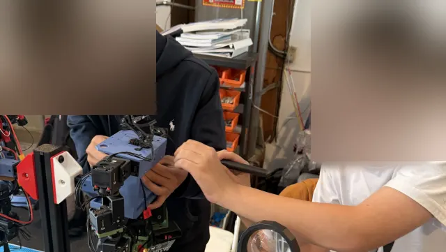
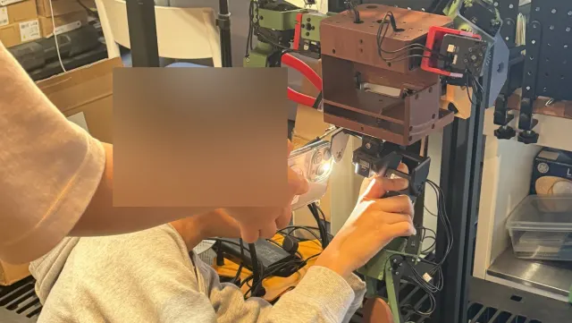
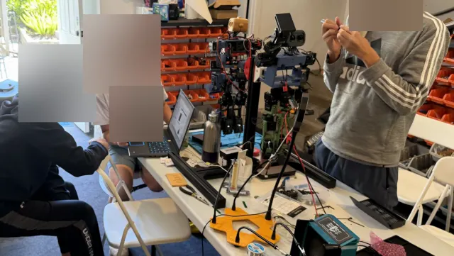
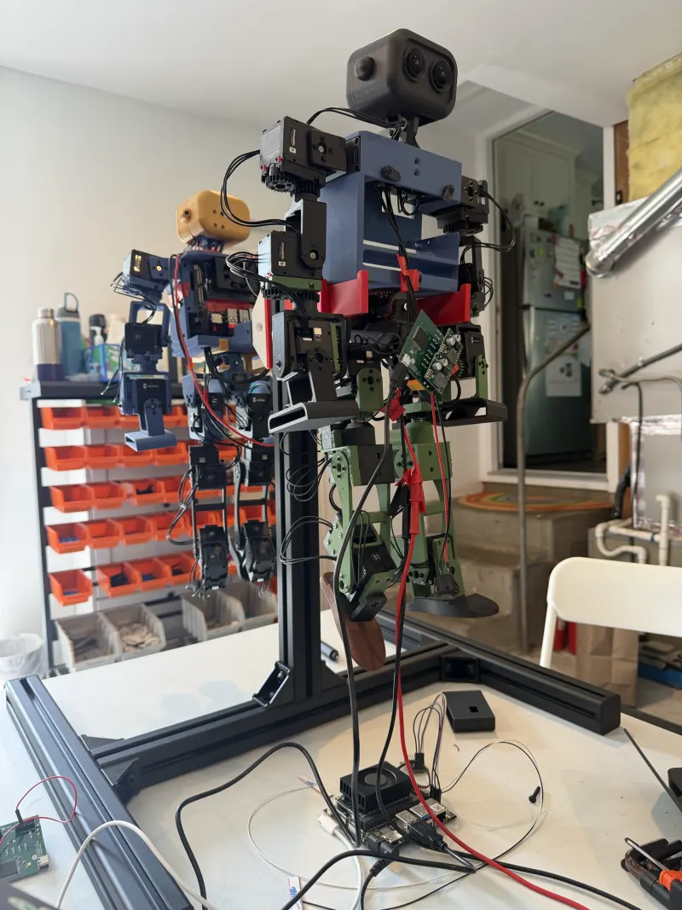

Build a real humanoid robot. Learn to make it move.
A hands-on robotics program for high-school students. Build and program a real humanoid as a team of four, with a first look at simulation and reinforcement learning.
Three ToddlerBots from our lab, all named and built by students: Tidal Wave Unleashed II, Gilbert, and Alan.
8 weeks
One 3-hour in-person session per week
Team of 4
Four students build and program one real ToddlerBot together
ME + EE + CS
Mechanical, electrical, and software work on one robot, with a first look at AI
1 : 4
Mentor-to-student ratio, so mentors know your code and your robot
Real students · Real robots · Real engineering
From individual parts to a working humanoid.
Students work as a team through the engineering process: mechanical assembly, wiring and actuator calibration, programming, and testing on real hardware. These photos are from previous cohorts.
A team of four

Built togetherElectrical work

Integration

Testing on the bench

Bring-up
What a previous course achieved: pairs of high-school students assembled ToddlerBot humanoids, completed the course, and achieved robot walking, as reported in our IEEE TALE 2026 paper. Robots were built collaboratively; each pair shared one robot.
Student faces are blurred to protect their privacy. Student performance and learning data are reserved for a separate study and are not claimed here.
Video: ToddlerBot research team (Shi et al., CoRL 2025). It shows what the platform can do in expert hands, not a student deliverable.
The platform
A research humanoid, small enough for a classroom.
ToddlerBot is open-source hardware and software used in published robot-learning research. Students work with the same platform and tools, guided step by step, with no proprietary kit and no black boxes.
Joints
30 active DoF
Compute
Jetson Orin NX
Perception
Stereo fisheye cameras
Simulation
MuJoCo + MJX
The learning journey · Cohort 03
Build → Control → Simulate → Learn → Demonstrate.
Eight weekly sessions, three hours each, with four students building one robot together. Most of the time is hands-on hardware. Simulation and reinforcement learning come at the end, as a first look at what's next.
01Weeks 1–4
Build
Understand the robot as a system, then assemble it as a team. Start with one limb, because a single limb teaches almost everything.
Robot architecture, degrees of freedom, and how actuators, sensors, controller, and battery connect
Mechanical assembly: joints, servo orientation, fasteners, alignment, and cable routing
Arms, legs, torso, head and neck: splitting the work across the team, then integrating it
Electronics and wiring checks: power system, servo bus, connectors, and multimeter basics
Milestone
A team-assembled humanoid, wired and inspected, ready for its first power-on.
02Weeks 5–6
Control
Make the robot do exactly what you tell it to, then measure how far reality differs from the command.
A safe power-on checklist, and knowing when power-on must wait
Servo IDs and zero-point calibration for every joint
Linux, Python, and the robot's configuration files
Joint scripts and logging. “Move joint 3 by 10 degrees, log commanded vs. actual angle, and explain the difference.”
Milestone
A powered, calibrated robot: every joint recognized and zeroed, running a verified scripted motion.
03Week 7
Simulate
Simulation is a controlled approximation of reality, not a video game. See your robot's model move, then compare it with the real thing.
Open-loop vs. closed-loop control, and why robots slip, tip, and lag
Designing a simple standing or keyframe motion and running it on the robot
Loading the robot's model in MuJoCo: bodies, joints, and actuators
Comparing the same motion in simulation and on hardware
Milestone
A keyframe motion that runs on your robot, and the same motion compared in MuJoCo.
04Week 8 · Preview
Learn
A first look at reinforcement learning, once you understand the mechanics, electronics, and control underneath it.
Policy, reward, observation, and action, and how trying different actions guides learning
Watching a supplied policy train on many simulated robots at once
Changing one reward and describing what changes
Why behavior learned in simulation doesn't always transfer to real hardware
Milestone
A guided experiment: change one reward in supplied training code and explain what happened.
Training policies, sim-to-real testing, and walking are the focus of the 22-week track.
05Week 8 · Showcase
Demonstrate
Show what your team built, including what didn't work and why.
Demonstrating your robot's verified motion
Walking through your engineering notebook: decisions, measurements, and failures
Explaining one problem the team diagnosed, and how
A short team presentation at the cohort showcase
Milestone
A team showcase demo, plus your own engineering notebook.
Our curriculum is informed by our team's work on bringing humanoid robotics and reinforcement learning into high-school education. The paper describes a structured framework that takes students from mechanical assembly and robot control to simulation and AI-driven experimentation.
IEEE TALE 2026 · Accepted paperarXiv:2609.25674 · Sept 2026
Teaching Reinforcement Learning and Humanoid Robotics to High-School Students: An Expert-Validated Curriculum Design on a Low-Cost Open Platform
Yuanzhe Dong, Jie Cao, and Shuman Wang
Stanford University · University of North Carolina at Chapel Hill
Teaching a full robotics research workflow (assembly, electronics, simulation, learning, and deployment) to novices is hard to organize. The paper presents a course framework that ties all of it to one shared robot: pairs of students assemble an open-source humanoid, train a walking policy in simulation, and test it on the physical robot. The framework was refined through structured review by five experts in robotics research, engineering, secondary STEM teaching, and curriculum design.
Intended outcomes:A working robotExplain AI behaviorTest predictionsJustify decisions
Highlighted steps are safety and readiness gates: on-robot control requires the safe power-on gate, and walking requires a standing test. Simulation can begin before hardware is ready. This is a conceptual progression, not a synchronized timetable.
How students learn
Learn by building, testing, and debugging.
Hard engineering topics become learnable when they're broken into checkable steps, and when every concept connects to something you can watch your own robot do.
Readiness gates
Safety induction
Component checks
Power-on
Calibration
First motion
01
One robot connects every subject
Mechanical, electrical, and software work all show up in the same robot's behavior. When a standing attempt fails, students explain it using both balance and control.
02
Big tasks become checkable milestones
One actuator, then one limb, then the lower body, then the full robot. Each step has an explicit success check before the next one starts.
03
Simulation first, then hardware
Predictions are made in simulation, then checked against real measurements. In week 7, you run the same motion in MuJoCo and on your robot, and explain the differences.
04
Worked example → controlled change → your call
Students start from working code, change one thing, then make their own bounded decisions. Example: modify a working joint script, then design your team's own keyframe motion.
05
Team robot, individual understanding
Four students share one robot and rotate operating and checking roles. Each student keeps their own engineering notebook of predictions, measurements, and failure explanations.
“Bad wiring beats good code every time.”A lesson from the electronics module. Debugging isn't a detour from the curriculum. It is the curriculum.
Instructor
Meet your instructor.
An AI engineer with graduate robotics training, who teaches students to understand, build, and experiment with the systems behind the technology.
Genboo is independently operated and is not affiliated with, sponsored by, or endorsed by Stanford University.
Technical support around the cohort
ToddlerBot education partnerGenboo is an authorized education partner of the ToddlerBot project.
Platform consultantsThe original first two co-authors of ToddlerBot serve as technical consultants on student code, simulation, and hardware.
Small-group mentoringWeekly labs, code reviews, and check-ins at a 1:4 mentor-to-student ratio.
Cohort 03 syllabus
Eight weeks, one robot, week by week.
Each 3-hour session is lab-first: a short concept primer, hands-on time on the robot, then a debrief with your mentor.
8 weekly sessions
3 hours each
4 students per robot
In person · Bay Area
Dates shared with applicants
Week 1Robot Architecture, Lab Safety & Your First Limb
Understand the robot as a system before you touch a screw: ToddlerBot architecture, degrees of freedom, the actuator/sensor/controller/battery loop, lab safety, and engineering notebooks. Then start one limb. It teaches joints, servo orientation, fasteners, and alignment.
Week 2Arms & Legs
Split into sub-teams to build the remaining limbs. Cable routing, bearings, torque limits, and checking that every joint moves freely before you move on.
Week 3Torso, Head & Neck
Integrate the limbs onto the torso, then install the head, neck, and stereo cameras. Finish with a mechanical inspection checklist.
Week 4Electronics & Wiring Checks
Power system, onboard computer, servo bus, IMU, connector labeling, and multimeter basics. Every connection is checked before power-on. Hard lesson: bad wiring beats good code every time.
Follow the power-on checklist, assign servo IDs, and zero-point calibrate every joint. Milestone: the robot powers on safely and every joint is recognized and calibrated.
Week 6Joint Scripts & Logging
Linux, the Python environment, and robot config files. Practical task: “Move joint 3 by 10 degrees, log commanded vs. actual angle, and explain the difference.” That's a real robotics lesson, not AI magic.
Week 7Keyframe Motion & MuJoCo Intro
Open-loop vs. closed-loop control. Design a simple standing or keyframe motion and run it on the robot. Load the robot's model in MuJoCo and compare one motion in simulation and on hardware.
What a policy, reward, observation, and action are. Watch a supplied policy train in simulation and change one reward. Then the showcase: milestone demo of your robot's verified motion and a short team presentation.
After Cohort 03
Want to go further? The 22-week track.
Our longer research track goes deeper on the same platform over a summer lab, a fall hybrid term, and a final output sprint: MuJoCo model matching, control, reinforcement-learning experiments, and a technical write-up. Ask us about availability.
Phase 01 · 8 weeksJun–Aug
Summer Intensive
Reproduce ToddlerBot
In-person lab, about 6 hours per week, weekend-weighted. Teams build side by side with mentors: assembly, wiring, and bring-up.
Weeks 1–8 of 22
Phase 02 · 12 weeksSep–Dec
Fall Academy
Simulate, control & improve
Hybrid: weeknight virtual seminars and code reviews, plus in-person lab integration days for sim-to-real testing on the robot you built in summer.
Weeks 9–20 of 22
Phase 03 · 2 weeksDec–Jan
Output Sprint
Final project & showcase
Daily virtual writing and review sessions, plus one in-person showcase day for talks and demos.
Weeks 21–22 of 22
See the full 22-week syllabus
Weeks 1–2Foundations & Robot Architecture Summer
Understand the robot as a system before you touch a single screw. ToddlerBot architecture, degrees of freedom, the actuator/sensor/controller/battery loop, lab safety, GitHub and engineering notebooks, and how to read CAD and assembly drawings.
Weeks 3–4Mechanical Build: One Limb First, Then Lower Body Summer
Start with a single leg or arm module before tackling the full robot. One limb teaches almost everything: joints, servo orientation, fasteners, bearings, cable routing, alignment, torque limits, and debugging. Once one limb works cleanly, the rest is repetition. Then assemble the full lower body.
Power system, Jetson, servo bus, IMU, connector labeling, multimeter basics, and a safe power-on sequence. Each joint gets its servo ID assigned and zero-point calibrated. Hard lesson: bad wiring beats good code every time.
Linux basics, Python environment, robot config files, and simple joint test scripts. Phase 1 success demo: the robot powers on safely, every joint is recognized and calibrated, and it can run a simple verified motion sequence. The goal isn't “the robot walks” yet.
Weeks 9–11Software Infrastructure & Joint Control Fall
Git workflow, robot config files, joint IDs, logging, teleoperation scripts, and basic sensor reading. Practical milestone: “Move joint 3 by 10 degrees, log commanded vs. actual angle, and explain the difference.” That is a real robotics lesson, not AI magic.
Weeks 12–14Simulation in MuJoCo Fall
Why simulation matters. MuJoCo model and XML structure: joints, bodies, actuators, contact, and gravity. The difference between simulation and the real robot. Match sim joint limits to your hardware. Simulation is a controlled approximation of reality, not a video game.
Weeks 15–16Control Before AI Fall
Open-loop vs. closed-loop. Position control and PD control. Balance intuition. Gait as a sequence. Failure modes: slipping, tipping, delay, and weak torque. Students create a simple standing, rocking, stepping, or keyframe motion. The lesson: AI sits on top of mechanics, electronics, and control, not in place of them.
Reinforcement learning fundamentals: policy, reward, observation, and action. Domain randomization, the sim-to-real gap, and what can go wrong when deploying to hardware. Practical deliverable: run or modify a baseline policy or motion experiment, change one parameter, and analyze the behavior. Then iterate toward your final-project track.
Pick a track (Mechanical, Electronics, Simulation, Control, AI, or Documentation) and produce a portfolio-quality deliverable: demo video, technical write-up in research-paper format, GitHub documentation, a short showcase talk, and a written reflection on what failed, what changed, and what you learned.
Final project: pick your track
Everyone learns the basics across the whole stack. The final deliverable goes deep in one direction:
MechanicalImprove cable routing or joint reliability on the chassis
ElectronicsBuild a clean wiring map and bring-up checklist for future cohorts
SimulationImprove how well the MuJoCo model matches the real hardware
ControlCreate a stable keyframe motion: standing, squatting, or stepping
AI / RLModify a reward or observation in simulation and analyze the change
DocumentationTurn your engineering notebook into a student-friendly assembly guide
Student outcomes
What will you actually build?
Tangible engineering work, not a certificate of attendance. Here's what each team works toward in eight weeks, what you'll take away, and where to go next.
Core milestones
Every team works toward
Shared by your team of four.
An assembled, wired humanoidPasses the mechanical and wiring inspection.
Safe power-on & calibrationEvery joint recognized and zeroed.
Joint scripts & logsCommanded vs. actual motion, measured and explained.
A verified motionA scripted or keyframe motion running on the robot.
What you take away
Yours to keep
Individual work and experience.
Engineering notebookYour decisions, measurements, and failures.
A first look at MuJoCoThe same motion in simulation and on hardware.
A first RL experimentGuided, using supplied training code.
Showcase demo & presentationExplaining what your team built and fixed.
Going further
Optional and next steps
Stretch goals, not requirements.
Custom shell partsDesign non-structural pieces, like your robot's nameplate, within mentor-set limits.
The 22-week trackModel matching, RL experiments, walking-policy attempts, and a technical write-up. Learn more
Eight weeks is a tight, real build.
The goal for Cohort 03 is a calibrated robot running a verified motion. Walking with a learned policy isn't a goal of the 8-week cohort; that's the focus of the longer track. Real hardware means parts break and progress varies by team. Diagnosing why something failed, and documenting it, counts as engineering work.
Ready to build one?
Applications for Cohort 03 are reviewed on a rolling basis. It takes about five minutes to express interest.
The essentials for students and parents. Anything not listed here, just ask: hello@genboo.com.
Who it's for
Current high-school students, grades 9–12, who are curious about how robots and AI actually work.
Prior experience
No robotics experience required. Some programming exposure (Python or C++) helps in the software weeks, but isn't required. Curiosity and persistence matter more than credentials.
Length & dates
8 weeks. Dates will be shared with applicants.
Weekly schedule
One 3-hour in-person session per week.
Location
In person in the San Francisco Bay Area, California.
Team size & mentoring
Teams of four students build one ToddlerBot together, with a 1:4 mentor-to-student ratio.
Costs & scholarships
Program fees, hardware kit costs, and scholarship eligibility are discussed with shortlisted applicants during the interview. Need-based scholarships are available for hardware kit costs.
After Cohort 03
Students who want to go deeper can ask about the 22-week track.
Express interestFill out the short form below. It takes about five minutes.
We follow upWithin 5 business days, with next steps.
InterviewShortlisted applicants talk with us about goals, fit, fees, and scholarships.
AdmissionApplications are reviewed on a rolling basis; we encourage applying early.
No. Week 1 starts from robot architecture and lab safety, and the build begins with a single limb before moving to the full robot.
Do students need to know Python?
It helps, but it isn't required to apply. The software sessions (weeks 6–8) start from working code, and mentors help students who are new to programming.
Will students work with physical robots?
Yes. Each team of four assembles, wires, calibrates, and programs a real ToddlerBot humanoid. Simulation is introduced near the end as a complement to the hardware, not a replacement.
How is reinforcement learning introduced?
As a preview in week 8, after students understand the robot's mechanics, electronics, and control. Students learn what policies, rewards, observations, and actions are, watch a supplied policy train in simulation, and change one reward to see what happens. Training and testing policies in depth is the focus of the 22-week track.
Is the program individual or team-based?
Team-based. Four students build and share one robot, rotating operating and checking roles. Each student also keeps their own engineering notebook.
What is the time commitment?
8 weeks, with one 3-hour in-person session per week.
What happens if the robot doesn't work?
That's part of the engineering. Students learn to work out whether a problem comes from the mechanics, the wiring, or the code, with mentor support. Every power-on follows a checklist, and diagnosing a failure counts as real progress.
What will students have completed at the end?
A team-built, calibrated humanoid running a verified motion, plus their own engineering notebook, a first look at MuJoCo and reinforcement learning, and a showcase demo. See What will you actually build? Exact progress depends on hardware behavior and each team.
Can students continue after the 8 weeks?
Yes. Students who want to go deeper can ask about the 22-week track, which covers simulation, control, and reinforcement learning in much more depth.
How do students apply?
Submit the interest form. We follow up within 5 business days, and shortlisted applicants are invited to an interview. Applications are reviewed on a rolling basis.
Is financial assistance available?
Yes. Need-based scholarships are available for hardware kit costs. Fees and scholarship eligibility are discussed with shortlisted applicants during the interview.
Apply · Cohort 03
Build real robots. Explore real AI. Experience real engineering.
Cohort 03 admits a small group. Hardware and lab space set the limit, so we read every application carefully and look for curious students who want to understand how things work.
Open to current high-school students, grades 9–12
Rolling review; applying early is encouraged
Need-based scholarships for hardware kit costs
Parents are welcome to submit on a student's behalf
Application received
Thanks, future roboticist. We'll reach out within 5 business days.